CBPS — Unbridled Curiosity
CBPS: visual identity, illustration system and brand guidelines for a women-led policy research organisation. Serious research that needed to stop looking intimidating.
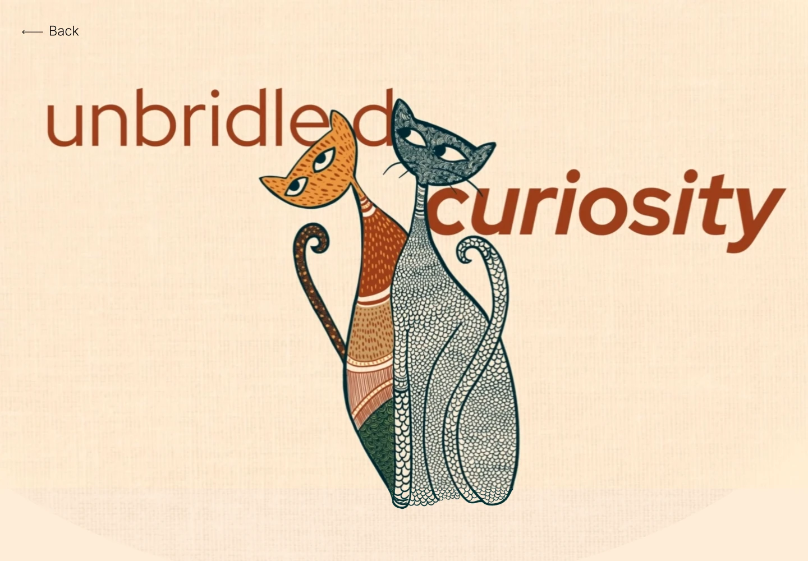
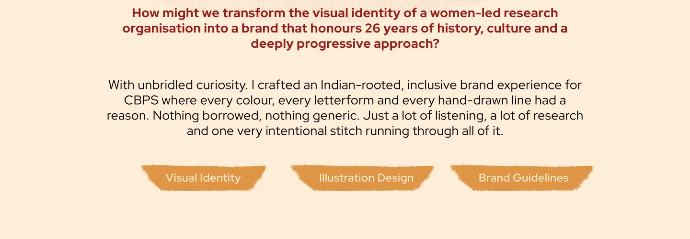
How might we transform the visual identity of a women-led research organisation into a brand that honours 26 years of history, culture and a deeply progressive approach?
With unbridled curiosity. I crafted an Indian-rooted, inclusive brand experience for CBPS where every colour, every letterform and every hand-drawn line had a reason. Nothing borrowed, nothing generic. Just a lot of listening, a lot of research and one very intentional stitch running through all of it.
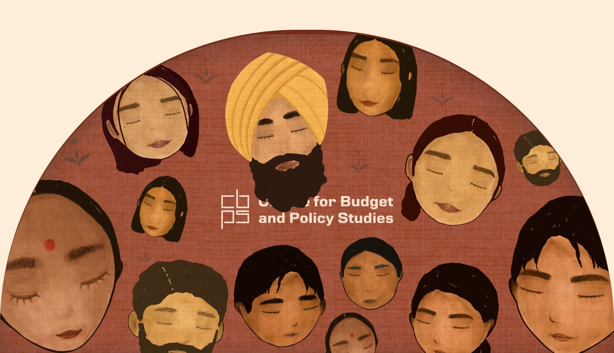
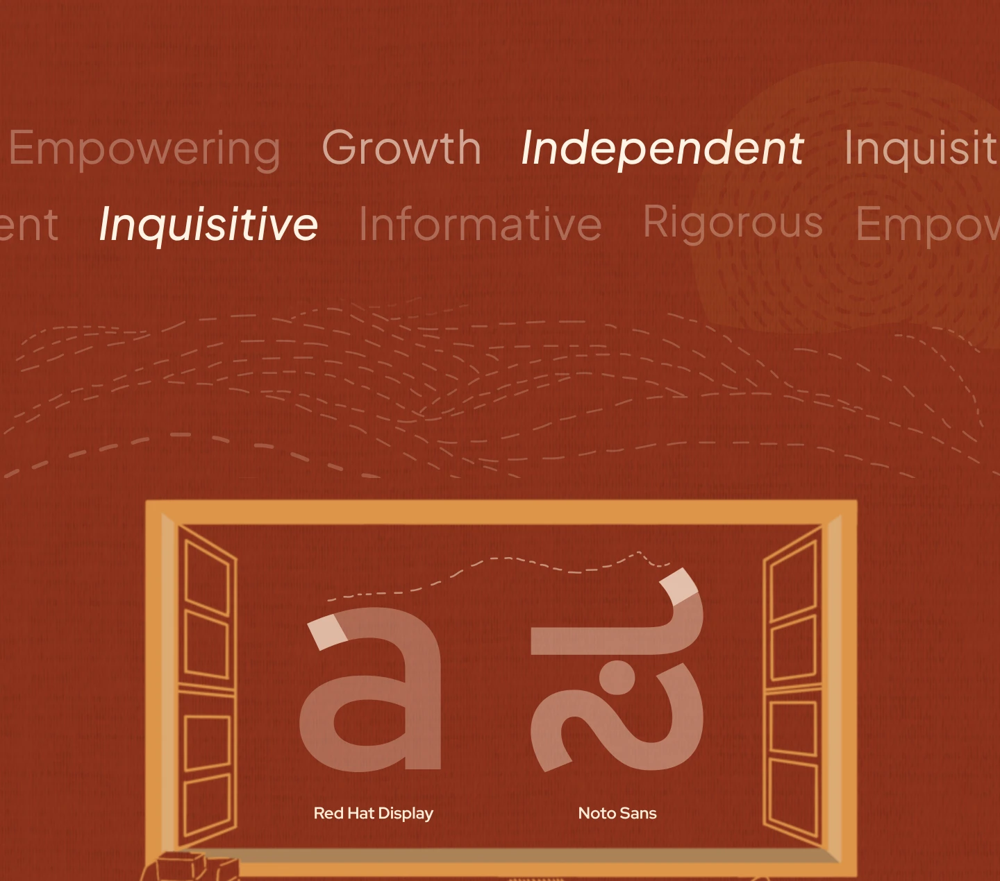
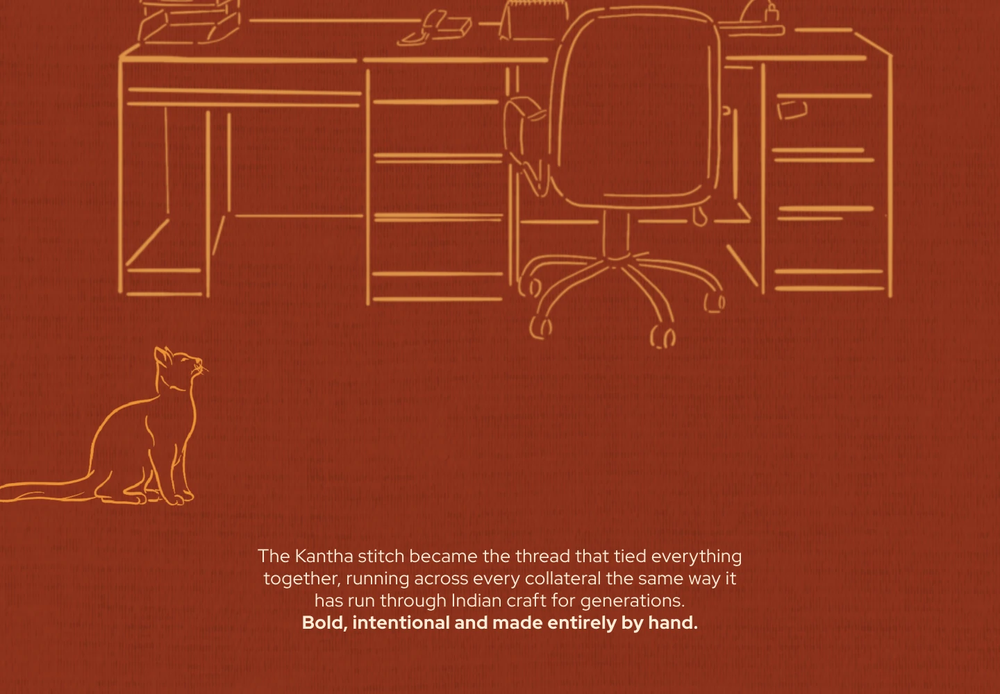
The Kantha stitch became the thread that tied everything together, running across every collateral the same way it has run through Indian craft for generations. Bold, intentional and made entirely by hand.
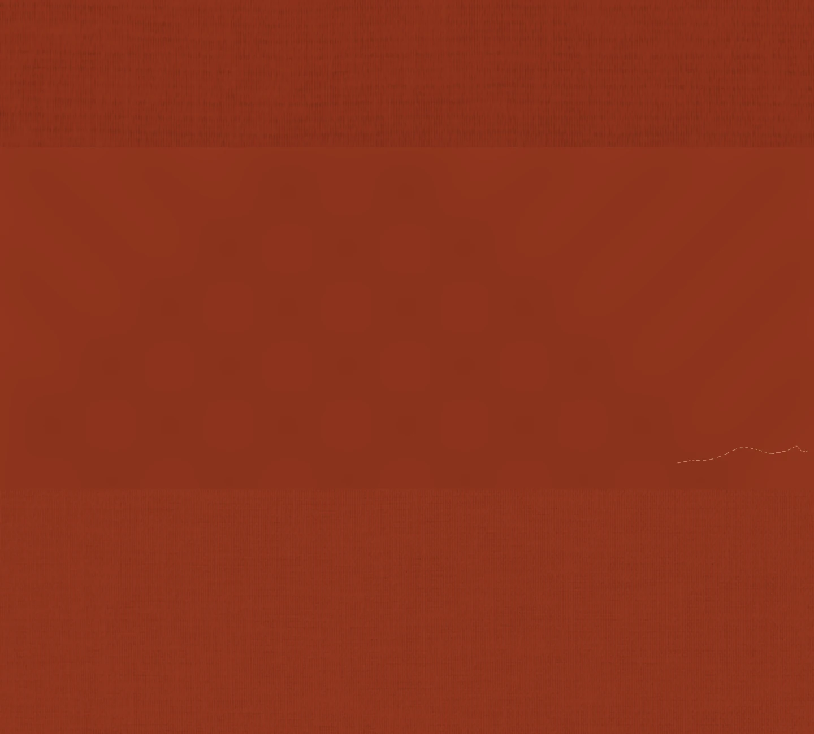
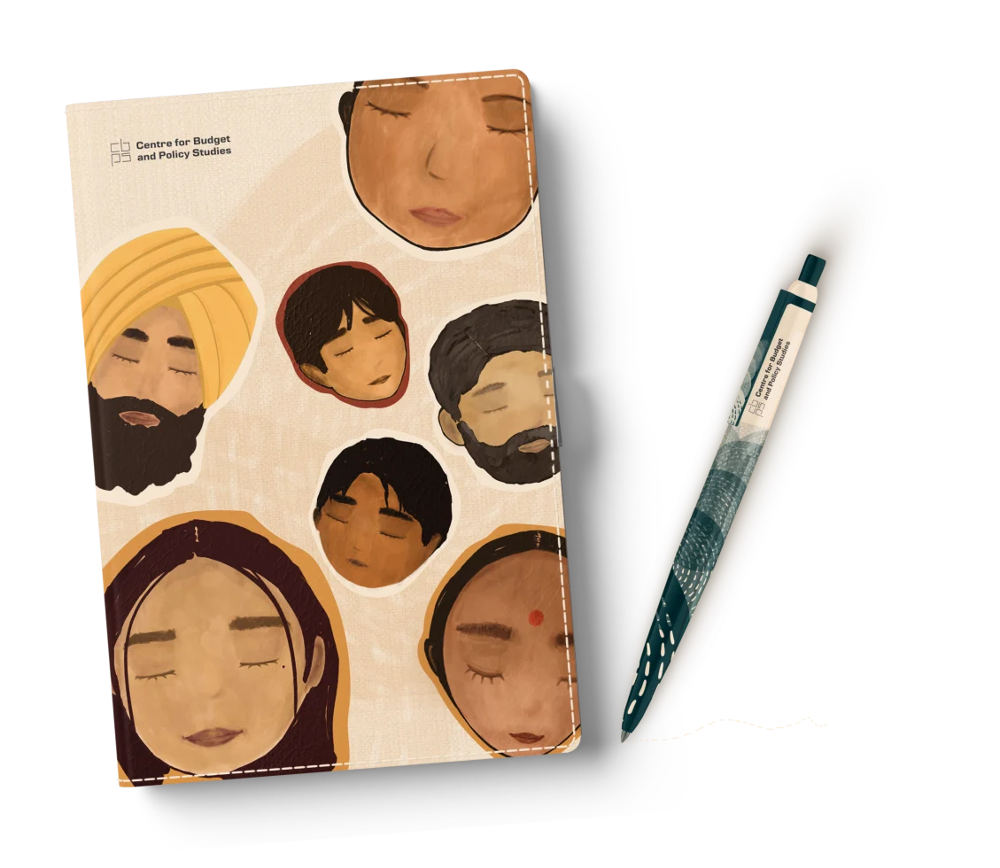
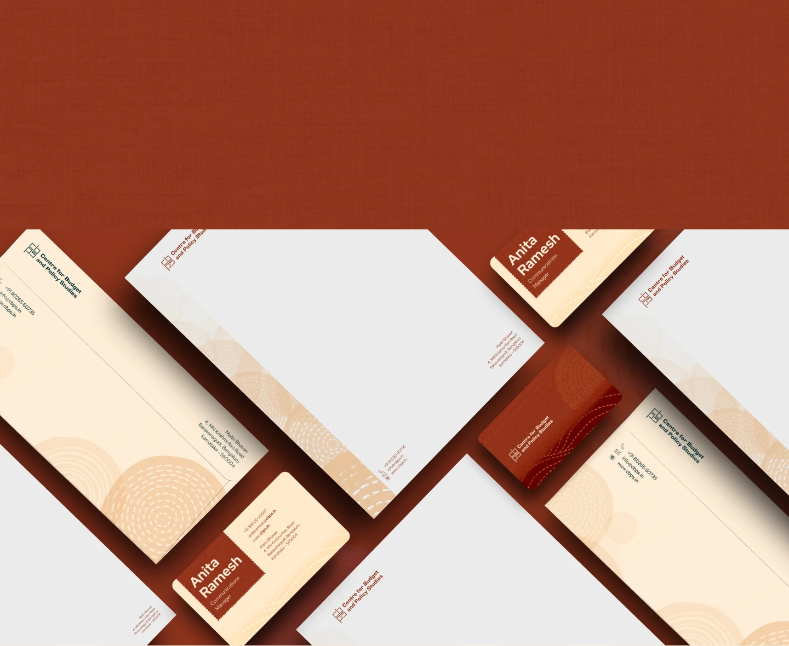
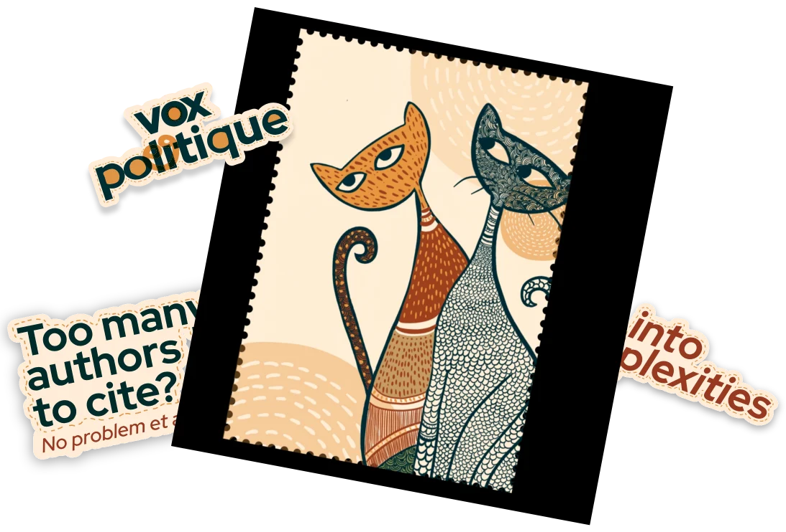
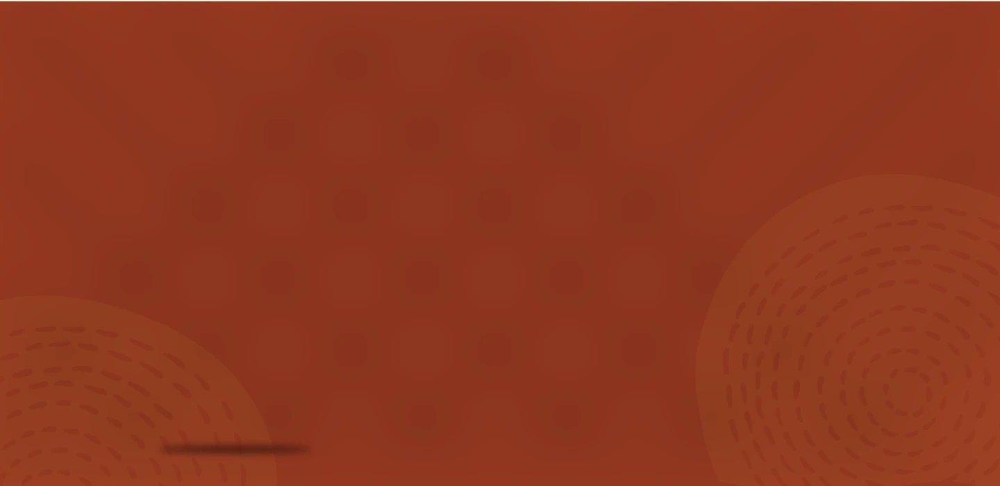
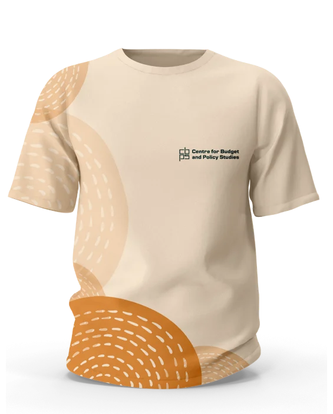
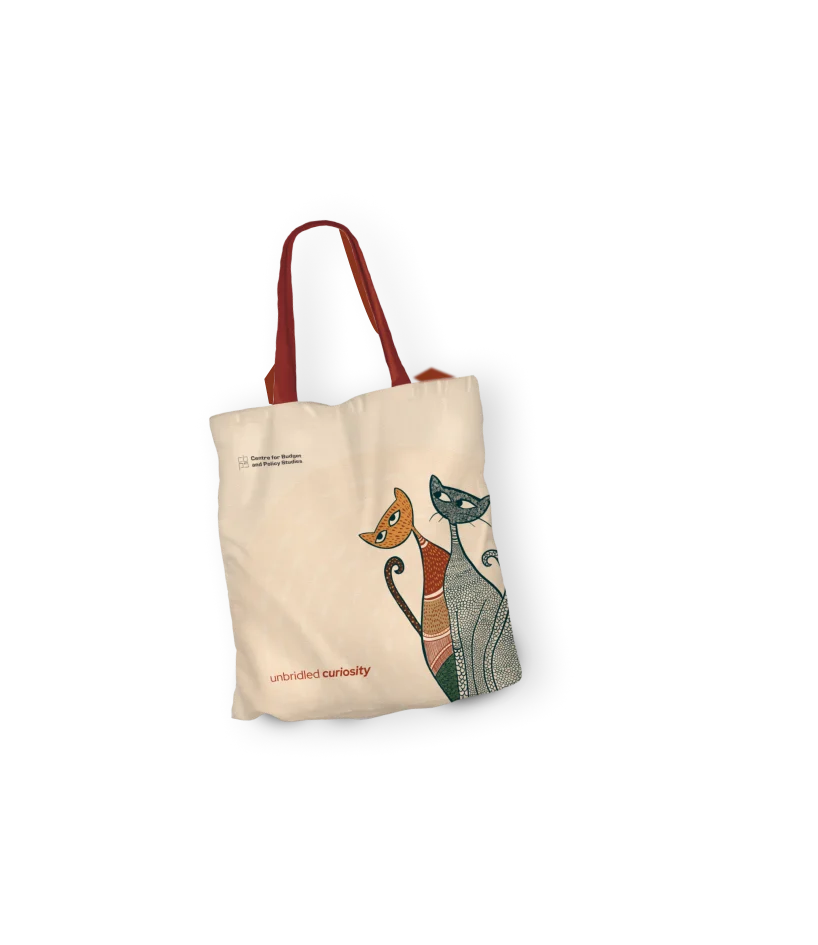
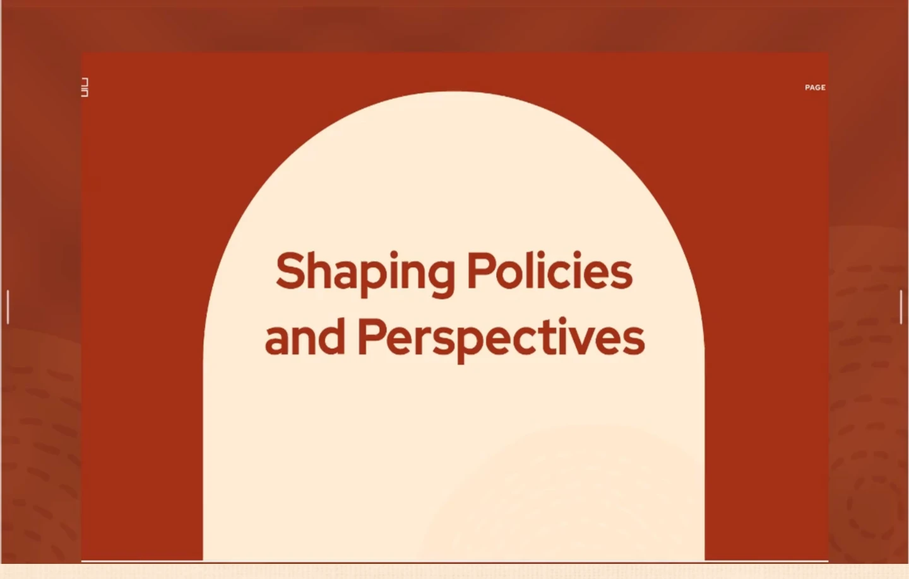
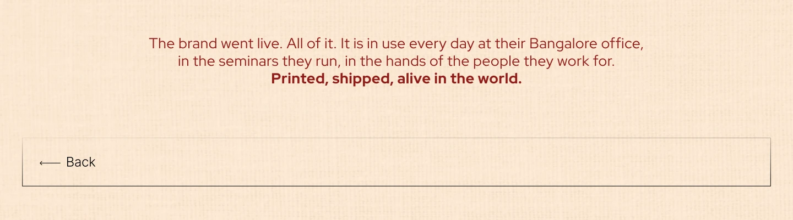
The brand went live. All of it. It is in use every day at their Bangalore office, in the seminars they run, in the hands of the people they work for. Printed, shipped, alive in the world.